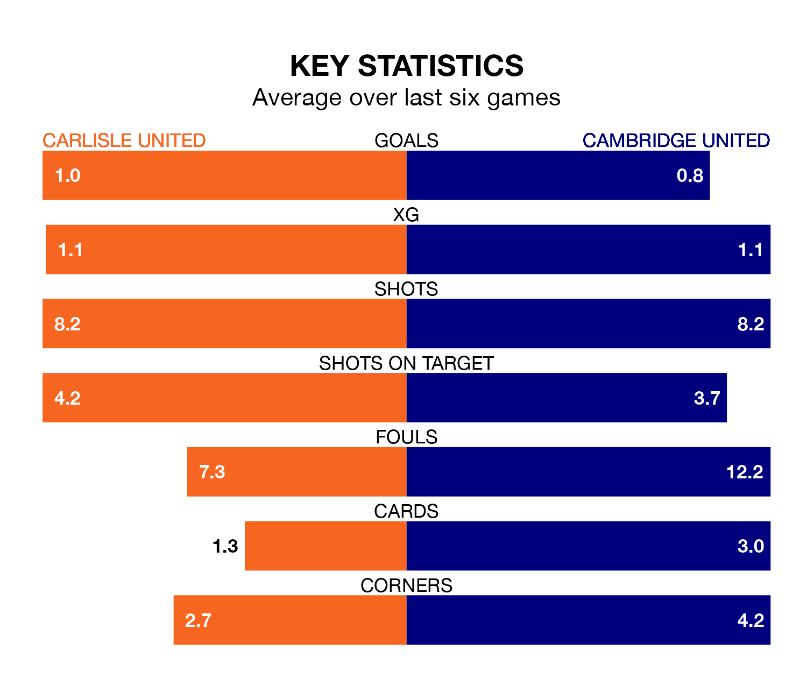

Carlisle United welcome Cambridge United to Brunton Park on Saturday looking to pick up points to end their six-game losing streak.
Carlisle's struggles have left them with no points from their last six EFL League One matches, while their opponents have earned eight from a possible 18.
Carlisle are bottom of the table after 31 games, of which they have won four and drawn eight, earning 20 points.
Cambridge are seven places ahead of Carlisle United in 17th, with nine wins and eight draws putting them on 35 points.
In the last 10 years, Carlisle and Cambridge have played each other on 13 occasions. Carlisle won three of them, Cambridge four, and they drew six times.
On average, Carlisle scored 1.2 goals and Cambridge 1.6 in those matches.
Their last meeting was on October 28, when Cambridge won 1-0 at home.
With 26 goals in 31 games so far this season, the home side are scoring at below the league average rate with 0.8 goals per game. And they are conceding more than average, letting in 51 goals at a rate of 1.6 per game.
Cambridge United are also below average scorers, with 0.9 goals per game, compared to a league average of 1.3. They have conceded 1.3 goals per game.
Carlisle's last match was on February 10, a 1-0 loss against Portsmouth.
Cambridge lost 3-1 against Portsmouth last time out, on Tuesday, with Danny Andrew on the scoresheet.
Saturday's match will be refereed by Scott Jackson, who has taken charge of five EFL League One games so far this season, issuing no red cards and booking 18 players. He has not awarded any penalties.
He is yet to oversee a match featuring either Carlisle or Cambridge this season.
Updated: 13:04 (UTC), 16/02/24